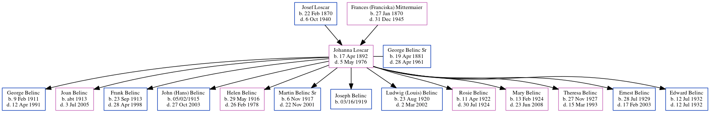

Johanna Belinc (née Loscar) 1892 - 1976
[ Home ] | [ Calendar ] | [ Surnames Index ] | [ Family History ]The child of Josef Loscar (a hatmaker) and Frances (Franciska) Mittermaier, Johanna Loscar, the great-aunt of Michele Copp (née Phillips), was born in Essen, Germany on Apr 17, 18921,2,3, was baptized in Salgótarjá;n, Nógrá;d, Hungary on Apr 18, 1892 and married George Belinc Sr (with whom she had 13 children: George P, Joan, Frank, John (Hans), Helen Margaret, Martin Francis, Joseph Anthony, Ludwig (Louis), Rosie, Mary Alberta, Theresa Veronica, Ernest Patrick and Edward) in Essen, North Rhine-Westphalia, Germany in 1910.
During her life, she was living in Pittsburgh, Allegheny, Pennsylvania in 19301; in Davis District, Davis, Tucker, West Virginia, USA in 19405; in Davis , W. VA c. 19456; and in Wyandotte, Wayne, Michigan2. She arrived in New York, New York in 1914.
She died on May 5, 1976 in Taylor, Wayne, Michigan2,3 and was buried in Thomas, Tucker County, West Virginia after May 5, 19764.
Parents
- Josef was born on Feb 22, 1870
- Frances (Franciska) was born on Jan 27, 1870
Children
- George P was born on Feb 9, 1911
- Joan was born c. 1913
- Frank was born on Sep 23, 1913
- John (Hans) was born on 05/02/1915
- Helen Margaret was born on May 29, 1916
- Martin Francis was born on Nov 6, 1917
- Joseph Anthony was born on 03/16/1919
- Ludwig (Louis) was born on Aug 23, 1920
- Rosie was born on Apr 11, 1922
- Mary Alberta was born on Feb 13, 1924
- Theresa Veronica was born on Nov 27, 1927
- Ernest Patrick was born on Jul 28, 1929
- Edward was born on Jul 12, 1932
Citations
- 1930 United States Federal Census Online publication - Provo, UT, USA: MyFamily.com, Inc., 2002.Original data - United States of America, Bureau of the Census. Fifteenth Census of the United States, 1930. Washington, D.C.: National Archives and Records Administration, 1930. T626, 2,667 rol
- Michigan Deaths, 1971-1996 Online publication - Provo, UT, USA: The Generations Network, Inc., 1998.Original data - Michigan Department of Vital and Health Records. Michigan Death Index. Lansing, MI, USA.Original data: Michigan Department of Vital and Health Records. Michigan Death
- Social Security Death Index Online publication - Provo, UT, USA: MyFamily.com, Inc., 2006.Original data - Social Security Administration. Social Security Death Index, Master File. Social Security Administration.Original data: Social Security Administration. Social Security Death Inde
- U.S., Find a Grave Index, 1600s-Current Ancestry.com Operations, Inc. (Find a Grave. Find a Grave. www.findagrave.com.)
- 1940 United States Federal Census Ancestry.com Operations, Inc.
- U.S., Newspapers.com Marriage Index, 1800s-1999 Ancestry.com Operations Inc (See newspaper information provided with each entry.)
Family Tree
Generated by ged2site. Last updated on Jun 16, 2024